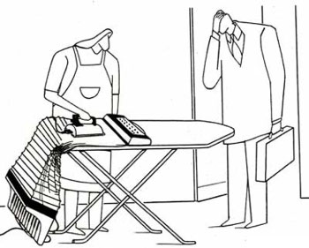

پذيرش > سایت نوشته ها > خانهداری، خدمتی بیمزد و منت
 گزارشی درباره ناامنی اقتصادی در زندگی 17 میلیون زن خانهدار ایرانی گزارشی درباره ناامنی اقتصادی در زندگی 17 میلیون زن خانهدار ایرانی

 خانهداری، خدمتی بیمزد و منت خانهداری، خدمتی بیمزد و منت
2 اسفند 1387 - فرهنگ آشتی - نسخه قابل چاپ
همه اعضای خانواده دور میز صبحانه جمع شدهاند، زن چای میآورد مرد از کارهایی که در آن روز باید انجام دهد میگوید، او امشب نیز دیر خواهد آمد، زن میگوید نگران نباشد بچهها راخودش به دندانپزشکی میبرد، او و بچهها قدر دان زحمات مرد هستند. بچهها باید به مدرسه بروند مرد و بچهها از خانه خارج میشوند آنها از اینکه در چنین کانون گرمی زندگی میکنند خشنودند، با خروج آنها زن تنها میشود او میز صبحانه را جمع و سایر کارهایی را که باید طی روز انجام دهد را در ذهنش مرور میکند، شستن رختها، آماده کردن ناهار، خریدکردن و... زن از انجام کارهای خانگی و داشتن چنین خانوادهای احساس رضایت میکند... و زندگی به خوبی ادامه مییابد.
این تصویری آرمانی است از خانواده متکی به نقش مادری، خانهداری و همسرداری زن که به خصوص در سالهای اخیر از سوی دولت بسیار ترویج شده است، خانوادهای که در آن نقشهای زن و مرد براساس جنسیت آنان تعیین میگردد و این دو به منظور ایفای وظایف خود در قبال جامعه آن را میپذیرند. خانواده هستهای مطلوب پارسونز و سایر جامعهشناسان کارکردگرا که در آن مرد وظیفه نان آوری، تعیین جایگاه خانواده در ساختار اجتماعی و برقراری ارتباط خانواده با سایر نهادهای جامعه را بر عهده دارد و وظیفه زن تامین نیازهای عاطفی خانواده است، وجود بیش از 80 درصد زنان خانهدار در ایران حکایت از کثرت این نوع خانواده در کشورمان دارد.
اما درست در زمانی که به نظر میرسد همه چیز به خوبی در جای خود قرار گرفته و رسالت تعیین جایگاه زن و مرد در خانواده و جامعه به خوبی به انجام رسیده است، آمارها نشان میدهد که یک جای کار میلنگد آمارهایی که حاکی از افزایش میزان طلاق، افسردگی زنان و خشونتهای خانگی است، نشان میدهد که این شکل از خانواده با آسیبهایی به خصوص در رابطه با زنان مواجه است. از جمله اینکه براساس این آمار میزان افسردگی در زنان دو برابر مردان است. روانشناسان یکی از دلایل این امر را محول شدن کامل وظایف مربوط به نگهداری از فرزندان و کارهای خانه به زنان میدانند. سیما فردوسیپور روانشناس بالینی در مورد علت افزایش میزان افسردگی در زنان میگوید: «از آنجا که زنان به سبب طبیعتشان بیشتر از مردان در معرض تغییرات هورمونی قرار میگیرند، طبیعتا بیشتر از آنها دچار افسردگی میشوند، دوران بلوغ، ازدواج، بارداری، شیردهی و حتی سقط جنین شرایطی ایجاد میکند که زن را در معرض بیماری افسردگی قرار میدهد، اما در بسیاری از موارد افسردگی زنان کاملا زائیده محیط بیرونی است».
او میافزاید: «زمانی که زن احساس کند در زندگی به بن بست رسیده است و توان و امکان تغییر این شرایط و همچنین راهحلی برای آن ندارد چارهای جز افسردگی ندارد، جامعه و به ویژه خانواده زنان را تنها گذاشته است، همه این طور فکر میکنند که تربیت فرزندان تنها در گرو دستان توانمند مادران است و پدران عملا نقشی ندارند و این زن است که در همه مسئولیتها به تنهایی بار دشوار فرزندپروری را بر دوش دارد. حال که ما او را اینچنین در بحرانهای خانوادگی، مشکلات اقتصادی، فرزندپروری و مسائلی که نیاز به حقوق زن و مرد در کنار یکدیگر دارد تنها میگذاریم و عملا جای مردان و اعضای دیگر خانواده دراین میان خالی است،زنان یاد میگیرند افسرده باشند».
بتی فریدان نویسنده فمینیست نیز در کتاب معروف خود ـ راز و رمز زنانه – از افسردگی پنهان زنان خانهدار سخن میگوید، افسردگی که ناشی از یکنواختی و کسلکننده بودن کارهای خانه است.
در تحقیقی که در سال 1386 در تهران انجام شد، مواردی شامل نظافت روزانه منزل، نظافت کلی منزل، ظرفشویی، آشپزی، رسیدگی به درس بچهها، خریدهای روزانه،تعمیرات جزیی، پذیرایی از مهمانان، جمعکردن میز غذا یا سفره و تمیز کردن سرویسهای بهداشتی به عنوان کارهای خانگی مطرح شد که روزانه حدود 7 ساعت از وقت زنان خانهدار به آنها اختصاص مییابد.
بنابراین زنان خانهدار به طور پیوسته به انجام اموری میپردازد که براساس نوشته اوکلی از جامعهشناسان منتقد، اول اینکه کار شمرده نمیشود به این معنا که ارزش اقتصادی برای آن تصور نمیشود و دوم اینکه وابستگی مالی زن به همسرش را نشان میدهد.
در واقع از زمان شکلگیری اقتصاد صنعتی و جدا شدن محل کار از خانه، کار خانگی زنان کار غیرتولیدی و فاقد ارزش اقتصادی محسوب شد.
یعنی زنان علاوه بر اینکه از عرصه عمومی جامعه کنار گذاشته شدند به لحاظ اقتصادی غیرمولد محسوب شدند.
این مسئله زمانی بغرنجتر میشود که در افکار خود زنان و سایر افراد جامعه نیز کار زن فاقد ارزش تلقی میشود. این در حالی است که مرکز پژوهشهای مجلس در سال 86 با صدور گزارشی اعلام کرد با توجه به اینکه زنان خانهدار با انجام دادن کارها در خانه همسر خود، در واقع او را از صرف هزینههایی بینیاز میکند، باید به این درآمد پنهان هویت داده شود و در همین ارتباط مرکز آمار ایران یا بانک مرکزی میتوانند با محاسبه ارزش کار خانگی زنان از طریق شاخص Ghp نقش موثری در این زمینه داشته باشند. دراین گزارش اعلام شد با توجه به وجود 17 میلیون و 498 هزار و 826 خانواده در کشور ارزش اقتصادی کار زنان خانهدار در کل کشور بالغ بر 336 هزار میلیارد در سال میشود که سهم آن در تولید ناخالص با قیمت جاری 7/16 درصد خواهد شد.
در ادامه همین گزارش پیشنهاد شده است برای تامین آینده زنان خانهدار اجرای طرح بیمه زنان خانهدار و توانمندسازی آنان مورد توجه قرار بگیرد.
طرح بیمه زنان خانهدار از سال 81 به صورت آزمایشی در 6 شهر از 6 استان کشور توسط سازمان بهزیستی مورد اجرا گذاشته شده اما به دلیل عدم تامین منابع مالی آن تاکنون موفق نبوده است.
در حال حاضر حدود 17 میلیون زن خانهدار در کشور زندگی میکنند و قرار بود با در نظر گرفتن اعتبارات کافی برای اجرای طرح بیمه زنان، سالانه یک میلیون نفر از زنان خانهدار تحت پوشش بیمه قرار گیرند در صورتی که عملا چنین اتفاقی رخ نداد و به دلیل عدم تخصیص اعتبارات کافی و برخی اشکالات طرح عملا بعد از گذشت 6 سال مسکوت ماند. تا اینکه در آذرماه امسال بار دیگر سازمان تامین اجتماعی اعلام کرد که زنان خانهدار میتوانند تحت بیمه قرار بگیرند. اما این طرح نیز با مشکلات طرح قبلی روبهرو است از جمله عدم برخورداری زنان خانهدار از درآمد اقتصادی برای پرداخت حق بیمههای ماهانه است، این حق بیمهها بر اساس برآورد دارای سه نرخ 16،14و 20 درصدی از دستمزد است که ماهانه بالغ بر 26 تا 270 هزار تومان میشود و بسیاری از زنان خانهدار قادر به پرداخت آن نیستند.
خلأهای قانونی برای حمایت اقتصادی از زنان
وجود 14 میلیون زن خانهدار که بالغ بر 80 درصد زنان ایران را تشکیل میدهند توجه به وضع قوانین حمایتی برای تامین آینده آنها را ضروری مینماید چرا که قوانین ایران از این نظر دارای خلأهای بسیاری است، براساس قوانین ما زنان نفقه بگیر محسوب میشوند، براساس ماده 1107 قانون مدنی این نفقه عبارت است از مسکن و البسه، غذا و اثاثالبیت که به طور متعارف با وضعیت زن متناسب باشد و خادم در صورت عادت زن به داشتن خادم یا احتیاج او به واسطه مرض یا نقصان اعضا. بنابراین نفقه صرف مایحتاج روزمره زن میشود و تضمینی برای آینده او و در شرایطی که شوهرش را از دست دهد ندارد ضمن اینکه نفقه در برابر تمیکن زن پرداخت میشود نه کار خانگی او.
در سال 1371 با اصلاح مقررات مربوط به طلاق، اختصاصا به اجرتالمثل زوجه پرداخته شد، یعنی اجرت کارهایی که زن در طول زندگی مشترک در منزل شوهر انجام ميدهد. براساس این ماده واحده به زن در صورتی اجرتالمثل پرداخت میشود که این شرایط منظور شده باشد: 1- کارهای انجام شده توسط زوجه به عهده وی نباشد. 2- به دستور زوج و یا قصد عدم تبرع انجام شده باشد 3- طلاق به درخواست زوجه نباشد 4- علت درخواست طلاق از ناحیه زوج، تخلف زوجه از انجام وظایف همسری وی و سوءرفتار و اخلاق وی نباشد.
بنابراین چنانچه دیده شد دریافت اجرتالمثل از سوی زنان در زمان طلاق باید از چهار مرحله عبور کند که این امر رسیدن به نتایج مطلوب را برای زنان بسیار سخت میکند. تملک بر مهریه نیز در صورتی است که طلاق به درخواست زن نباشد، این امر نیز به دلیل نحوه اجرای آن بسیار دشوار است. در حال حاضر مهریهها به طور معمول قسطبندی میشود و با در نظر گرفتن شرایط مالی مرد ماهانه چند سکه به زن تعلق میگیرد، بنابراین مهریه نیز منبع قابل اتکایی را در اختیار زن قرار نمیدهد، این در حالی است که رسانهها و سازمانهای دولتی نیز به جای برنامهریزی برای تامین اقتصادی زنان خانهدار به طور مرتب از طریق تبلیغات و اعمال قوانین جدید به تحدید میزان مهریه زنان میپردازند تا جایی که سازمان ثبت اسناد پیشنهاد قید شرط عندالاستطاعه را برای پرداخت مهریه داده است که تملک بر مهریه را منوط به استطاعت مالی مرد میکند، این شرایط نیز زمینههای زیادی را برای فرار مردان از پرداخت مهریه فراهم میکند.
براساس قوانین مربوط به ارث نیز زن خانهداری که همسرش را از دست بدهد، در صورت داشتن فرزند تنها یک هشتم و در صورتی که فرزند نداشته باشد یک چهارم از اموال منقول و غیرمنقولی که در طول زندگی مشترک با همسرش به دست آورده را صاحب میشود.
بنابراین چنانچه دیده شد چشمانداز روشنی از آینده اقتصادی زنان خانهدار وجود ندارد.
نکته
طرح بیمه زنان خانهدار این بار اجرا میشود؟
آذرماه امسال مهندس حسینعلی ضیایی رئیس هیئت مدیره و مدیرعامل سازمان تامین اجتماعی از ابلاغ بخشنامه «بیمه زنان خانهدار» به واحدهای اجرایی این سازمان خبر داد. وی گفت که براساس این طرح زنان خانهدار با رعایت شرایط مقرر در بیمه صاحبان حرف و مشاغل آزاد از تاریخ صدور این بخشنامه (17 آذرماه) در زمره مشمولان تامین اجتماعی قرار گرفتهاند و این افراد میتوانند در صورت تمایل به صورت خوداظهاری به عنوان «خانهدار» و با انعقاد قرارداد و پرداخت حق بیمه مقرر از تعهدات قانونی این سازمان برخوردار شوند. به گفته ضیائی ضوابط بیمه شدن زنان خانهدار با شرایط صاحبان حرف و مشاغل آزاد با پرداخت 20 درصد سهم حق بیمه که 18 درصد آن سهم بیمه شده و 2 درصد سهم دولت است، علاوه بر برخورداری از مزایای بیمه بازنشستگی و فوت مشمول قانون از کارافتادگی نیز میشوند. نرخهای پرداختی حق بیمه 14، 16 و 20 درصد است که مربوط به سه طریق حق بیمه است. سن متقاضیان بیمه زنان خانهدار که فاقد سابقه پرداخت حق بیمه به این سازمان هستند در هنگام درخواست نباید از 45 سال تمام بیشتر باشد و در صورتی که سن آنها بالاتر از سال ذکر شده باشد در صورت داشتن سابقه پرداخت حق بیمه قبلی به ازای نصف مدت سابقه به سقف سنی مجاز آنها اضافه میشود. همچنین درخواست برای متقاضیانی که دارای حداقل 10 سال سابقه حق بیمه هستند بدون شرط سنی پذیرفته میشود. پیش از این در سال 82 طرح بیمه زنان خانهدار مطرح شد و قرار بود 17 میلیون زن خانهدار ایرانی با اولویت زنان خودسرپرست و سرپرست خانوار تحت پوشش بیمه اجتماعی قرار بگیرند اما این طرح به دلیل برخی مشکلات از جمله عدم تخصیص اعتبارات لازم تاکنون مسکوت مانده است.
گفت وگو با یک زن خانهدار
خانهداری به روایت یک زن
مریم.ش، زنی 41 ساله و خانهدار است. او 17سال است که ازدواج کرده و دارای دو فرزند دختر است،مدرک لیسانس در رشته زبان آلمانی دارد اما وارد بازار کار نشده است، نگاه او را به خانهداری و تبعات آن میخوانیم.
ـ ـ ـ
به طور معمول طی یک روز چه کارهایی انجام میدهید؟
شش صبح از خواب بیدار میشوم، صبحانه را آماده میکنم، بعد بچهها را بیدار میکنم تا صبحانه بخورند، بعد از آنها شوهرم را بیدار میکنم، آنها که از خانه میروند ابتدا کارهایی که از دیشب مانده است را انجام میدهم، خرید میروم و تا عصر کارهای مربوط به نظافت و غذا پختن را انجام میدهم.
انجام این کارها چه مقدار از وقت شما را میگیرد؟
در روزهایی که دختر کوچکم کلاس زبان ندارد حدود 4 تا 5 ساعت وقتم صرف این کارها میشود و بقیه اوقات را صرف کارهایی که دوست دارم میکنم، مثلا بیرون میروم، تلفنی صحبت میکنم، ورزش میکنم، روزنامه میخوانم (روزی 3 روزنامه را به طور کامل میخوانم) و کانالهای خبری را نگاه میکنم. روزهای زوج که باید دخترم را به کلاس زبان ببرم سه ساعت به این زمان اضافه میشود. چون باید صبر کنم تا کلاس دخترم تمام شود.
چه احساسی نسبت به کارهای روزمره خانهداری دارید؟
به نظرم این کارها یک مقداری یکنواخت است، ساعتهایی را که صرف کارهای بچهها و خانه میکنم تا حدودی برایم خستهکننده است البته این کارها برای بچهها مفید است و کس دیگری نمیتواند آن را انجام دهد، اما انجامش افسردگی میآورد.
در خانه ارتباطم با بیرون کم است و فقط با بچهها سروکار دارم من به دنبال ارتباط مفید و با کیفیت با افراد دیگر هستم، افرادی که صداقت داشته باشند و حرفم را بفهمند، البته ممکن است شاغلان هم چنین ارتباطهایی نداشته باشند.
چه میزان احساس میکنید که از استقلال اقتصادی برخوردارید و میتوانید در مورد درآمد خانه تصمیم بگیرید؟
من هرطور که بخواهم میتوانم خرج کنم چون از ابتدا خریدها و سایر مسائل مالی خانه را خودم انجام میدادم، شوهرم وقت کافی برای این کارها ندارد، البته شوهرم خیلی هم دستم را برای خرج کردن باز نمیگذارد، اما من اهل خرجهای زیاد نیستم. با این حال فشار اقتصادی احساس نمیکنم.
در مورد آینده اقتصادی خود چقدر احساس امنیت میکنید؟
اگر به عنوان یک زن خانهدار به طور کامل به شوهرتان وابسته باشید آینده خطرناکی خواهید داشت. با این مسائلی که میگویند مهریه هم باید با شرط عندالاستطاعه تعیین شود، مردها هر کاری که بخواهند میتوانند بکنند، در واقع وضعیت ناامنی برای زنها به وجود میآید اما من احساس ناامنی نمیکنم چون به نوعی دارای استقلال اقتصادی هستم.
چقدر در اتخاذ تصمیمهای مهمی مانند خرید خانه یا سرمایهگذاری اقتصادی سهیم هستید؟
اگر مسئله یک دفعه بیان شود، تصمیم اصلی را حتما شوهرم میگیرد. وقتی میخواهیم خانه بخریم یک مسائلی را مطرح میکند که از آن سردر نمیآورم، مثلا در مورد شوفاژخانه بنابراین ساکت میمانم، اما اگر فرصت باشد میتوانم کمکم روی تصمیم شوهرم تاثیر بگذارم.
از خانهدار بودن خود راضی هستید یا ترجیح میدادید شاغل باشید؟
بستگی به این دارد که چه شغلی داشته باشم، مثلا دلم میخواست نویسنده یا وکیل بودم اما خانهداری را به خیلی از کارها مثل منشیگری و فروشندگی ترجیح میدهم.
پرستو سرمدی
ارسال به
بالاترین
،
توییتر
،
فریندفید
،
فیسبوک
در همين بخش :
 یک خبر تلخ؟ یک قانونشکنی؟ یک تصمیم بخشنامهای جدید؟ یک خبر تلخ؟ یک قانونشکنی؟ یک تصمیم بخشنامهای جدید؟
چرا بایست به سکسوالیته پرداخت؟ / نفیسه آزاد
آزارجنسی خانگی؛ «قربانی» نه، «نجات یافته»
زنان، بزرگترین بازندگان بهار عرب
سانسور از دیدگاه جنسیتی/الهه امانی
ديگر بخش ها :
طرح یک میلیون امضا
|
مقالات
|
سایت نوشته ها
|
اخبار
|
گزارش كمپين
|
گفت و گو
|
علیه سکوت
|
كوچه به كوچه
|
نامه های شما
|
گزارش ویژه
|
گفتگو با اعضا
|
ویژه سالگرد کمپین
|
تصویر برابری
|
دل آرام علی
|
تریبون
|
مقالات
|
تاریخ شفاهی
|
خارج از چارچوب
|
کتابخانه
|
درباره کمپین
|
کمپین در شهرها
|
کمپین در بند
|
صدای تغییر
|
ویژه 22 خرداد
|
لایحه حمایت از خانواده
|
گالری
|
عشا مومنی
|
امیر یعقوبعلی
|
خدیجه مقدم
|
راحله عسگری زاده و نسیم خسروی
|
پروین اردلان،جلوه جواهری، مریم حسین خواه، ناهید کشاورز
|
زینب پیغمبرزاده
|
سعیده امین، سارا ایمانیان، محبوبه حسین زاده، ناهید کشاورز و همایون نامی
|
احترام شادفر
|
نسیم سرابندی زاده،فاطمه دهدشتی
|
وبلاگ مهمان
|
پرونده خرم آباد
|
دستگیری ها
|
مریم مالک
|
پرستو اللهیاری
|
مهرنوش اعتمادی
|
سمیه رشیدی
|
Other Languages
|
همراهان
|
«فراخوان کمپین ده روز با بهاره هدایت»
| English
|